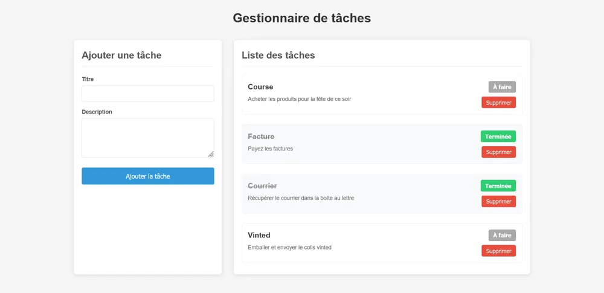
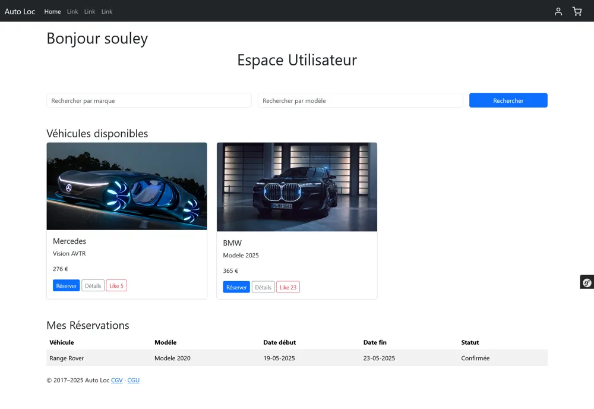

Recherche une alternance de 12 mois · 3 sem. entreprise / 1 sem. école
Je construis des produits web
et IA utiles, de bout en bout.
Je suis Souleymane Fall, développeur Full Stack & IA. Deux stages en SaaS (LegalTech, automatisation métier), un Master Développement, Big Data & IA en cours, et des projets qui vont du front React à un modèle de deep learning déployé.
- TypeScript
- React
- Node.js
- Symfony
- Python
- Docker
(SaaS & IA)
et IA
Big Data & IA
Anglais B2
À propos
Full Stack avec une vraie corde IA
Je suis passé des mathématiques et de l'informatique (Sorbonne Paris Nord) à une formation Full Stack en alternance, puis à un Master Développement, Big Data & IA à l'IPSSI. Ce parcours me permet de relier deux mondes : livrer des fonctionnalités propres côté front et back, et intégrer l'IA là où elle apporte de la valeur.
En entreprise, j'ai travaillé sur une plateforme SaaS LegalTech avec des briques d'IA, et sur des workflows métier automatisés avec intégrations tierces. Je cherche une alternance de 12 mois pour continuer à livrer en équipe, avec des revues de code, des tests et un souci de qualité.
- Front & back en TypeScript (React, Node.js, Fastify, NestJS) et PHP (Symfony)
- IA appliquée : transfer learning, API LLM (Gemini), webscraping, data
- Qualité : tests, revues de code, CI/CD, Docker
Expériences
Ce que j'ai livré en entreprise
-
Développeur Full Stack @ Bridgeness
- Développement d'une plateforme SaaS LegalTech intégrant des outils d'intelligence artificielle.
- Contribution à la conception fonctionnelle du produit, recherches juridiques et technologiques.
- Participation aux phases de tests, de recette et d'amélioration continue.
- Gestion de projet, veille technologique et échanges avec les partenaires.
-
Développeur Full Stack @ Cash Flow Positif
- Conception et implémentation de fonctionnalités front-end et back-end.
- Conception et automatisation de workflows métier.
- Intégration de services tiers : webhooks, API externes, services SaaS.
- Bonnes pratiques : tests, revues de code, qualité et performance.
Projets
Une sélection de ce que j'ai construit
IA, web full stack, mobile et design. Chaque projet a son code sur GitHub.
SmartWardrobe
App mobile de recommandation de tenues
Recommandations de tenues selon la météo. J'ai implémenté le service IA, l'intégration de Gemini et l'écran de résultat.

Web · Full stackTask Manager
Gestionnaire de tâches full stack
Application web typée de bout en bout : requêtes avec TanStack Query, formulaires react-hook-form, validation Zod.

Web · SymfonyAutoLoc
Application web de réservation de voitures
Application MVC complète : catalogue, réservation et base relationnelle gérée avec Doctrine.
Task List Manager
Gestionnaire de listes de tâches
Front Vue.js et API NestJS avec authentification JWT complète (inscription, connexion).
Webscraping
Collecte d'un palmarès sportif
Extraction automatisée d'environ 580 équipes sur ~24 pages paginées (scrapethissite.com).
Génération de recettes
Design d'une application mobile
Design complet d'une application mobile de génération de recettes, de la structure des écrans jusqu'aux maquettes.
Autres projets : E-book store · Movify · TEKZ · Tous mes dépôts ↗
Compétences
Ma boîte à outils
Développement
- TypeScript
- React JS
- React Native
- Node.js
- Express
- Fastify
- NestJS
- Symfony
IA & Data
- Python
- Analyse de données
- Webscraping
- Machine learning
- Deep learning
Bases de données
- MySQL
- MongoDB
DevOps
- Git
- Docker
- Kubernetes
- CI/CD
Outils & design
- Jira
- Figma
- UX
- Bootstrap
Formation
Parcours académique
Master Développement, Big Data & IA
IPSSI — Paris 12e
Bachelor 3 Développeur Full Stack
IPSSI — Paris 12e
Licence Mathématiques & Informatique
Université Sorbonne Paris Nord
Certifications : Bootstrap, UX · Langues : français (langue maternelle), anglais (B2)
Contact
Travaillons ensemble
Je cherche une alternance de 12 mois (3 semaines en entreprise / 1 semaine en école). Une question, une opportunité ? Écrivez-moi, je réponds vite.